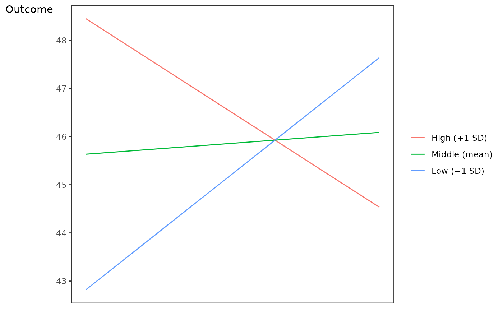
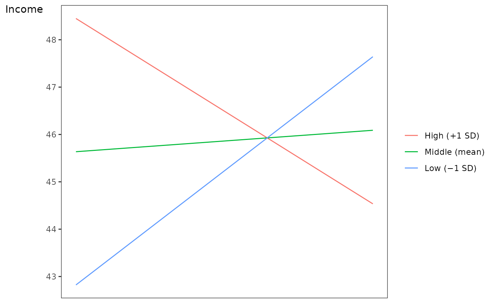

Generates a plot of a 2-way interaction from a structural equation model (SEM) that was estimated using the lavaan package.
Usage
semPlotInteraction(
data,
fit,
predictor,
centered_predictor,
moderator,
centered_moderator,
interaction,
outcome,
covariates = NULL,
ignore = NULL,
predStr = NULL,
modStr = NULL,
outStr = NULL
)Arguments
- data
the dataframe object from which the model was derived
- fit
the fitted model lavaan object
- predictor
the variable name of the predictor variable that is in its raw metric (in quotes)
- centered_predictor
the variable name of the mean-centered predictor variable as it appears in the model object syntax in lavaan (in quotes)
- moderator
the variable name of the moderator variable that is in its raw metric (in quotes)
- centered_moderator
the variable name of the mean-centered moderator variable that as it appears in the model object syntax in lavaan (in quotes)
- interaction
the variable name of the interaction term as it appears in the model object syntax in lavaan (in quotes)
- outcome
the variable name of the outcome variable as it appears in the model object syntax in lavaan (in quotes)
- covariates
default NULL; a vector of the names of the covariate variables as they appear in the model object syntax in lavaan (each in quotes)
- ignore
default NULL; a vector of the names of any variables (as they appear in the model object syntax in lavaan) to ignore when creating model implied predicted data (each in quotes)
- predStr
default NULL; optional addition of an x-axis title for the name of the predictor variable (in quotes); if left unset, plot label will default to "Predictor"
- modStr
default NULL; optional addition of an z-axis title for the name of the moderator variable (in quotes); if left unset, plot label will default to "Moderator"
- outStr
default NULL; optional addition of an x-axis title for the name of the outcome variable (in quotes); if left unset, plot label will default to "Outcome"
See also
Other plot:
addText(),
plot2WayInteraction(),
ppPlot(),
vwReg()
Other multipleRegression:
lmCombine(),
plot2WayInteraction(),
ppPlot(),
update_nested()
Other structural equation modeling:
equiv_chi(),
make_esem_model(),
puc(),
satorraBentlerScaledChiSquareDifferenceTestStatistic()
Examples
states <- as.data.frame(state.x77)
names(states)[which(names(states) == "HS Grad")] <- "HS.Grad"
states$Income_rescaled <- states$Income/100
# Mean Center Predictors
states$Illiteracy_centered <- scale(states$Illiteracy, scale = FALSE)
states$Murder_centered <- scale(states$Murder, scale = FALSE)
# Compute Interaction Term
states$interaction <- states$Illiteracy_centered * states$Murder_centered
# Specify model syntax
moderationModel <- '
Income_rescaled ~ Illiteracy_centered + Murder_centered + interaction +
HS.Grad
'
# Fit the model
moderationFit <- lavaan::sem(
moderationModel,
data = states,
missing = "ML",
estimator = "MLR",
fixed.x = FALSE)
#> Warning: lavaan->lav_model_vcov():
#> The variance-covariance matrix of the estimated parameters (vcov) does not
#> appear to be positive definite! The smallest eigenvalue (= 1.282391e-16)
#> is close to zero. This may be a symptom that the model is not identified.
# Pass model to function (unlabeled plot)
semPlotInteraction(
data = states,
fit = moderationFit,
predictor = "Illiteracy",
centered_predictor = "Illiteracy_centered",
moderator = "Murder",
centered_moderator = "Murder_centered",
interaction = "interaction",
outcome = "Income_rescaled",
covariates = "HS.Grad")

# Pass model to function (labeled plot)
semPlotInteraction(
data = states,
fit = moderationFit,
predictor = "Illiteracy",
centered_predictor = "Illiteracy_centered",
moderator = "Murder",
centered_moderator = "Murder_centered",
interaction = "interaction",
outcome = "Income_rescaled",
covariates = "HS.Grad",
predStr = "Illiteracy Level",
modStr = "Murder Rate",
outStr = "Income")
